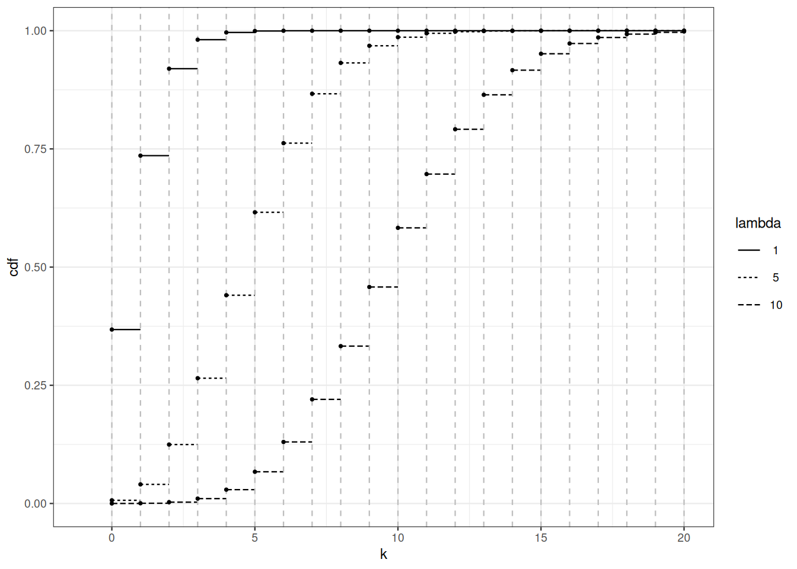

2 A modicum of measure theory
2.1 Roadmap
Performing stochastic modeling in a comfortable way requires consistent foundations and notation. In this chapter, we set the stage for further development. Probability theory started as the interaction between combinatorics and games of chance (XVIIth century). At that time, the set of outcomes was finite, and it was legitimate to think that any set of outcomes had a well-defined probability. When mathematicians started to perform stochastic modeling in different branches of sciences (astronomy, thermodynamics, genetics, …), they had to handle uncountable sets of outcomes. Designing a sound definition of what a probability distribution is, took time. Progress in integration and measure theory during the XIXth century and the early decades of the XXth century led to the modern, measure-theoretical foundation of probability theory.
2.2 Universe, powerset and \(\sigma\)-algebras
A universe is a set (of possible outcomes) we decide to call a universe. The universe is often denoted by \(\Omega\). Generic elements of \(\Omega\) (outcomes) are denoted by \(\omega\).
Example 2.1 If we think of throwing a dice as a random phenomenon, the set of outcomes is the set of labels on the faces \(\Omega = \{1, 2, 3, 4, 5, 6\}\). If we are throwing two dices, the set of outcomes is made of couples of labels \(\Omega' = \{(1,1), (1, 2), (1, 3), \ldots, (6,6)\} =\Omega^2\).
Example 2.2 In the idealized hashing problem (Section 1.1), the universe is the set of functions from \(1, \ldots, n\) to \(1, \ldots, m\). The size of the universe is \(m^n\).
A universe may or may not be finite or countable. If the universe is countable, all its subsets may be called events. Events are assigned probabilities. If the universe is countable, it is possible to assign a probability to each of its subsets. When the universe is not countable (for example \(\mathbb{R}\)), Assigning a probability to all subsets is not possible. We have to restrict the collection of subsets in order to assign probabilities to the collection members in a consistent way.
In the sequel \(2^{\Omega}\) denotes the collection of all subsets of \(\Omega\) (the powerset of \(\Omega\)).
A sensible collection of events has to be a \(\sigma\)-algebra.
What the smallest \(\sigma\)-algebra (with respect to set inclusion) that contains subset \(A\) of \(\Omega\)?
The next proposition shows that \(\sigma\)-algebras are stable under countable set-theoretical operations. We could have replaced countable union by countable intersection in the definition of \(\sigma\)-algebras. This is consequence of De Morgan’s laws:
\[ (A \cup B)^c = A^c \cap B^c \qquad \text{and} (A \cap B)^c = A^c \cup B^c \]
A \(\sigma\)-algebra of subsets is closed under countable intersections.
Proof. For \(A \subseteq \Omega\), let \(A^c = \Omega \setminus A\). Let \(A_1, \ldots, A_n, \ldots\) belong to \(\sigma\)-algebra \(\mathcal{G}\) of subsets of \(\Omega\). For each \(n\), \(A_n^c \in \mathcal{G}\), by definition of \(\sigma\)-algebra, \[\begin{align*} \cap_n A_n & = \Big(\big(\cap_n A_n\big)^c\Big)^c \\ & = \Big(\cup_n A_n^c\Big)^c \qquad \text{De Morgan} \, . \end{align*}\] By definition of a \(\sigma\)-algebra, \(\cup_n A_n^c \in \mathcal{G}\), and for the same reason, \(\Big(\cup_n A_n^c \Big)^c \in \mathcal{G}\).
The next proposition allows us to talk about the smallest \(\sigma\)-algebra containing a collection of subsets, this leads to the notion of generated \(\sigma\)-algebra.
The intersection of two \(\sigma\)-algebras of subsets of \(\Omega\) is a \(\sigma\)-algebra of subsets of \(\Omega\).
Proof. Let \(\mathcal{G}\) and \(\mathcal{G}'\) be two \(\sigma\)-algebras of subsets of \(\Omega\). The intersection of the two \(\sigma\)-algebras is
\[ \Big\{ A : A\subseteq \Omega, A \in \mathcal{G}, A \in \mathcal{G}' \Big\}\, . \]
Indeed, the intersection of a possibly uncountable collection of \(\sigma\)-algebras is a \(\sigma\)-algebra (check this). Because of this property, the notion of a \(\sigma\)-algebra generated by a collection of subsets is well-founded.
2.2.1 Generated \(\sigma\)-algebra
Given a collection \(\mathcal{C}\) of subsets of \(\Omega\), there exists a unique smallest \(\sigma\)-algebra containing all subsets in \(\mathcal{C}\), it is called the \(\sigma\)-algebra generated by \(\mathcal{H}\) and denoted by \(\sigma(\mathcal{C})\).
Example 2.3 Consider we are throwing a dice, \(\Omega = \{1, \ldots, 6\}\), let \[\mathcal{H} = \Big\{\{1, 3, 5\}\Big\}\, .\] This is a collection made of one event (the outcome is odd). The algebra generated by \(\mathcal{H}\) is \[\sigma(\mathcal{H}) = \Big\{ \{1, 3, 5\}, \{2, 4, 6\}, \emptyset, \Omega \Big\} \, .\]
Two kinds of \(\sigma\)-algebras play a prominent role in a basic probability course:
- the powerset of countable or finite sets.
- the Borel \(\sigma\)-algebras of topological spaces.
This definition works for every topological space. Recall that a topology on a set \(E\) is defined by a collection \(\mathcal{E}\) of open sets. This collection is defined by the following list of properties:
- \(\emptyset, E \in \mathcal{E}\)
- A (possibly uncountable) union of elements of \(\mathcal{E}\) (open sets) belongs to \(\mathcal{E}\) (is an open set)
- A finite intersection of open sets is an open set.
In the usual topology on \(\mathbb{R}\), a set \(A\) is open if for any \(x \in A\), there exists some \(r>0\) such that \(]x-r, x+r[ \subseteq A\). Any interval of the form \(]a,b[\) is open (these are the so-called open intervals).
This topology can be generalized to any finite dimension \(\mathbb{R}^d\).
We are now ready to set the stage of stochastic modeling. The playground always consists of a measurable space.
Example 2.4
- If \(\Omega\) is a countable or finite set, then \((\Omega, 2^\Omega)\) is a measurable space.
- If \(\Omega=\mathbb{R}\), then \((\mathbb{R}, \mathcal{B}({\mathbb{R}}))\) is a measurable space.
So far, we have not talked about probability theory, but, we are now equipped to define probability distributions and to manipulate them.
2.3 Probability distributions
A probability distribution maps a \(\sigma\)-algebra to \([0,1]\). It is an instance of a more general concept called a measure. We state or recall important concept of measure theory. The key idea underneath the elaboration of measure theory is that we should refrain from trying to measure all subsets of a universe (unless this universe is countable). Attempts to measure all subsets of \(\mathbb{R}\) lead to paradoxes and of little practical use. Measure theory starts by recognizing the desirable properties any useful measure should possess, then measure theory builds objects satisfying these properties on as large as possible \(\sigma\)-algebras of events, for example on Borel \(\sigma\)-algebras.
This motivates the definition of \(\sigma\)-additivity.
Note that if \(\mathcal{F}\) is a \(\sigma\)-algebra, \(\Big(\cup_{n \in \mathbb{N}} A_n\Big) \in \mathcal{F}\). \(\sigma\)-additivity fits well with \(\sigma\)-algebras, but it makes sense to define \(\sigma\)-additivity with respect to more general collections of subsets.
Proof. a.) Let \(B_{1} = A_1\), and \(B_{n+1} = A_{n+1} \setminus A_n\) for each \(n\), then \((B_n)_n\) is a sequence of pairwise disjoints elements of \(\mathcal{A}\). We have \(\cup_n B_n = \cup_n A_n\) and and by \(\sigma\)-additivity, \(\mu(\cup_n A_n) = \sum_n \mu(B_n)\)
\[\sum_{n\leq m} \mu(B_n) = \mu\left(\cup_{n\leq m} B_m\right) = \mu(A_m)\]
Hence \(\lim_{m\to \infty} \mu(A_m) = \sum_{n\in \mathbb{N}} \mu(B_n)= \mu(\cup_n A_n)\)
b.) The second statement is proved in a similar way.
c.) Let \((A_n)_n\) be such that \(A_n = \emptyset\) for each \(n\), this is a sequence of pairwise disjoint elements of \(\mathcal{A}\), by \(\sigma\)-additivity, we have
\[\sum_{n\in \mathbb{N}} \mu(\emptyset) = \mu(\emptyset)\]
which implies \(\mu(\emptyset)=0.\)
\(\square\)
By Proposition 2.1, for any positive measure \(\mu\), we have \(\mu(\emptyset)=0\). When \(\mu(\Omega)\) is finite, \(\mu\) is said to be finite positive measure.
A positive measure \(\mu\) is not necessarily a probability distribution. For example, the counting measure \(\mu\) on \(\mathbb{N}\) satisfies \(\mu(A) = |A|\) for all \(A \subseteq \mathbb{N}\), so we have \(\mu(\mathbb{N})=\infty.\)
Remark 2.1. The notion of \(\sigma\)-additivity is strictly stronger than finite additivity. Assuming the (as usual when working in Analysis or Probability), there exists a function \(\mu\) that map \(2^{\mathbb{N}}\) to \([0,1]\), that is additive (\(\mu(A \cup B)= \mu(A) + \mu(B)\) for all \(A, B, A\cap B=\emptyset\)), zero on all finite subsets of \(\mathbb{N}\) and such that \(\mu(\mathbb{N})=1\). Such a function is not \(\sigma\)-additive.
2.4 Lebesgue measure
We take the existence of Lebesgue’s measure for granted. This is the content of the next theorem.
Theorem 2.1 is typical of statements of measure theory. It defines a complex object (a measure) by its trace on a simple collection of sets (intervals).
The proof of Theorem 2.1 can be cut in several meaningful pieces. First define a length function on intervals. Show that this function can be extended to an additive function on finite union, finite intersection and complements of intervals. Then check that the extension is in fact \(\sigma\)-additive on the closure of intervals under finite set-theoretical operations (which is not a \(\sigma\)-algebra).
Once this additive extension is constructed, use Carathéodory’s extension theorem below to prove that the length function can be extended to a \(\sigma\)-additive function on the \(\sigma\)-algebra generated by intervals (the Borel \(\sigma\)-algebra).
Then it remains to check that the extension is unique. This can be done by a generating set argument, for example the monotone class Lemma Lemma 2.4.
The Lebesque measure existence theorem guarantees that we can define the uniform probability distribution over a finite interval \([a,b]\). If we denote Lebesgue measure by \(\ell\), the uniform probability distribution over \([a,b]\) assign probability
\[ P(A) = \frac{\ell(A)}{b-a} = \frac{\ell(A)}{\ell([a,b])} \]
to any \(A \in \mathcal{B}(\mathbb{R}) \cap [a,b]\).
The uniform distribution over \(([0,1], \mathcal{B}([0,1]))\) looks like an academic curiosity with no practical utility. This superficial opinion should be dispelled. Using a generator for the uniform distribution, it is possible to build a generator for any probability distribution over \((\mathbb{R}, \mathcal{B}(\mathbb{R}))\). This can be done using a device called the quantile transform. In this sense, the uniform distribution is the mother of all distribution.
An outcome \(\omega\) of the uniform distribution is a real number. How does a typical outcome look? A real number \(\omega \in [0,1]\) has binary expansions: \(\omega = \sum_{i=1}^\infty b_i 2^{-1}\) with \(b_i \in \{0,1\}\). What is the probability there is a unique binary expansion? First, check whether this probability is well-defined. Assuming the binary expansion is unique, \(\omega\) is said to be normal if \(\lim_n \frac{1}{n}\sum_{i=1}^n b_i(\omega) = 1/2\). Is the probability of obtaining a normal number well-defined? If yes, compute it.
The Lebesgue existence theorem can be extended. Indeed, any sensible definition of the length of an interval can serve as a starting point.
Recall that a real function is CADLAG if it is right-continuous everywhere, and has left-limits everywhere.
The next Theorem can be established in a way that parallels the construction of Lebesgue’s measure.
We recover Lebesgue’s existence Theorem by taking \(F(x)=x\).
If we focus on functions \(F\) that satisfy \(\lim_{x \to -\infty} F(x)=0\) and \(\lim_{x \to \infty} F(x)=1\), Theorem Theorem 2.3 defines probability distributions through their cumulative distribution functions (more on this topic in Section 2.7).
2.5 Measurable functions and random variables
So far, we only talked probability and measure of sets (events). As stochastic modeling is at the root of quantitative analysis, we introduce the notion of measurable function. This allows us handle numerical functions that map outcomes to \(\mathbb{R}\) or \(\mathbb{R}^d\).
Not every numerical function is measurable. To define what we call a measurable function, we need the notion of inverse image or preimage.
Note that \(f^{-1}\) does not denote the inverse of function \(f\) which may not be injective. In this course, \(f^{-1}\) is a set function from the powerset of the codomain of \(f\) to the powerset of the domain of \(f\). The inverse function if it exists (or the generalized inverse function) is denoted by \(f^\leftarrow\). The inverse function, when it exists, maps \(f(\mathcal{X})\subseteq \mathcal{Y}\) to \(\mathcal{X}\).
Example 2.5 Recall the idealized hashing setting from Section 1.1. Let \(\Omega\) denote the set of functions from \(1, \ldots, n\) to \(1, \ldots, m\) (assume \(n \leq m\)). For \(\omega \in \Omega\) (\(\omega\) is function, but it is also a \(1, \ldots, m\)-valued sequence of length \(n\)), let \(f(\omega)\) be the number of values in \(1, \ldots, m\) that have no occurrence in \(\omega\) (the number of empty bins in the allocation defined by \(\omega\)). The function \(f\) is a numerical function that maps \(\Omega=\{1, \ldots, m\}^n\) . For \(B \in \mathbb{N}\), \(f^{-1}(B)\) is the subset of allocations which have \(k\) empty bins, \(k \in B\).
The preimage operation works well with set-theoretical operations.
Elementary properties of measurable functions follow from properties of inverse images. Inverse image preserves set-theoretical operations.
Taking the preimages of elements of a \(\sigma\)-algebra defines a \(\sigma\)-algebra.
Under which condition on \(\mathcal{H}\) is \(f\) \(\mathcal{F}/\mathcal{G}\)-measurable?
Example 2.6 Recall the idealized hashing scenario from Section 1.1.
2.6 The Monotone class theorem
The monotone class theorem or lemma is a powerful example of the generating class arguments that can be used to prove that two probability measures or maybe two \(\sigma\)-finite measures are equal.
A \(\sigma\)-algebra is a \(\pi\) class, but the converse is false.
A \(\sigma\)-algebra is a \(\lambda\)-system.
The intersection of a collection of \(\lambda\)-systems is a \(\lambda\)-system. Hence, it makes sense to talk about the smallest \(\lambda\)-system containing a collection of sets.
The next easy proposition makes \(\lambda\)-system very useful when we want to check that two probability distributions are equal.
Proof. Let \((\Omega, \mathcal{F})\) be a measurable space. Let \(P, Q\) be two probability distributions over \((\Omega, \mathcal{F})\). Let \(\mathcal{C} \subseteq \mathcal{F}\) be defined by
\[ \mathcal{C} = \Big\{ A : A \in \mathcal{F}, P(A)=Q(A) \Big\} \, . \]
By the very definition of measures we have \(P(\Omega)=Q(\Omega)\), hence \(\Omega \in \mathcal{C}\).
If \(A \subseteq B\) both belong to \(\mathcal{C}\), again by the very definition of measures,
\[ P (B \setminus A) = P(B) - P(A) = Q(B) - Q(A) = Q(B \setminus A) \, , \]
hence, \(B\setminus A \subseteq \mathcal{C}\).
Let \(A_1 \subseteq A_2 \subseteq A_n \subseteq \ldots\) be a non-decreasing sequence of elements of \(\mathcal{C}\), again by the very definition of measures,
\[ P(\cup_n A_n) = \lim_n \uparrow P(A_n) = \lim_n \uparrow Q(A_n) = Q(\cup_n A_n) \, . \]
Hence \(\mathcal{C}\) is closed by monotone limits.
\(\square\)
Finite measures (this encompasses probability measures) are \(\sigma\)-finite. Lebesgue measure is \(\sigma\)-finite. The counting measure on \(\mathbb{R}\) is not \(\sigma\)-finite.
What happens if we only assume that the two measures are \(\sigma\)-finite?
Proof. Let \(\mathcal{M}\) denote the intersection of all monotone classes that contain tyhe \(\pi\)-system \(\mathcal{A}\). As a \(\sigma\)-algebra is a monotone class (a \(\lambda\)-system), we have \(\mathcal{M} \subseteq \sigma(\mathcal{A})\), the only point that has to be checked is \(\sigma(\mathcal{A}) \subseteq \mathcal{M}\). It is enough to check that \(\mathcal{M}\) is indeed a \(\sigma\)-algebra.
In order to check that \(\mathcal{M}\) is a \(\sigma\)-algebra, it is enough to check that it is closed under finite union or equivalently under finite intersection.
For each \(A \in \mathcal{A}\), let \(\mathcal{M}_A\) be defined by \[ \mathcal{M}_A = \Big\{ B : B \in \mathcal{M}, A \cap B \in \mathcal{M}\Big\} \, . \]
Remember that \(\mathcal{A}\) is a \(\pi\)-system, and \(\mathcal{A} \subseteq \mathcal{M}\), we have \(\mathcal{A} \subseteq \mathcal{M}_A\). To show that \(\mathcal{M} = \mathcal{M}_A\), it suffices to show that \(\mathcal{M}_A\) is a monotone class.
If \((B_n)_n\) is an increasing sequence of elements of \(\mathcal{M}_A\), then
\[ (\cup_n B_n) \cap A = \cup_n \Big(\underbrace{B_n \cap A }_{\in \mathcal{M}}\Big) \, , \]
the right-hand-side belongs to \(\mathcal{M}\) since \(\mathcal{M}\) is monotone. Hence \(\mathcal{M}_A\) is closed by monotone increasing limit.
To check closure by complementation, let \(B \subseteq C\) with \(B, C \in \mathcal{M}_A\). As
\[ A \cap (C \setminus B) = \Big(\underbrace{A \cap C}_{\in \mathcal{M}}\Big) \setminus \Big(\underbrace{A \cap B}_{\in \mathcal{M}}\Big) ) \, \]
the closure of \(\mathcal{M}\) under complementation entails \(A \cap (C \setminus B) \in \mathcal{M}\) and \(C \setminus B \in \mathcal{M}_A.\)
Now, let \(\mathcal{M}^{\circ}\) be defined as \[ \mathcal{M}^\circ = \Big\{ A : A \in \mathcal{M}, \forall B \in \mathcal{M}, A \cap B \in \mathcal{M} \Big\} \,. \]
We just established that \(\mathcal{A} \subseteq \mathcal{M}^{\circ}\). Using the same line of reasoning allows us to check that \(\mathcal{M}^\circ\) is also a monotone class. This shows that \(\mathcal{M}^\circ= \mathcal{M}\).
We are done.
\(\square\)
Combining Proposition 2.6 and the Monotone Class Lemma (Theorem 2.4) leads to the next useful corollary.
If two probabilities \(P, Q\) on \((\Omega, \mathcal{F})\) coincide on a \(\pi\)-system \(\mathcal{A}\) that generates \(\mathcal{F}\):
\[ \mathcal{A} \subseteq \{ A : A \in \mathcal{F} \text{ and } P(A)=Q(A)\} \qquad\text{and} \qquad \mathcal{F} \subseteq \sigma(\mathcal{A}) \]
then \(P, Q\) coincide on \(\mathcal{F}\).
2.7 Probability distributions on the real line
A probability distribution is a complex object: it maps a large collection of sets (a \(\sigma\)-algebra) to \([0,1]\). Fortunately, it is possible to characterize a probability distribution by simpler object. If we focus on probability distributions over \((\mathbb{R}, \mathcal{B}(\mathbb{R}))\), they can be characterized by real functions on \(\mathbb{R}\).
A probability distribution defines a unique distribution function. What is perhaps surprising is that a distribution function defines a unique probability distribution function.
This is a rephrasing of Theorem 2.3.
Figure Figure 2.1 shows the cumulative distribution function of Poisson distributions for different values of the parameter (see Sections Section 1.4 and Section 5.2 for more on Poisson distributions). For parameter \(\mu\), \(F_{\mu}(x) = \sum_{k \leq x} \mathrm{e}^{-\mu} \frac{\mu^k}{k!}\).
2.8 General random variables
A real random variable is neither a variable, nor random. A real random variable is a measurable function from some measurable space to the real line endowed with the Borel \(\sigma\)-algebra. There is nothing random in a random variable.
Once a measurable space is endowed with a probability distribution, is it possible to define the (probability) distribution of a random variable.
Random variables may be vector-valued, function-valued, etc. General random variables are defined as measurable functions between measurable spaces.
2.9 Bibliographic remarks
There are many beautiful books on Probability Theory. They are targetted at different audiences. Some may be more suited to the students of the dual curriculum Mathématiques-Informatique. I found the following ones particularly useful.
Youssef (2019) is a clear and concise collection of class notes designed for a Master I-level Probability course that is substantially more ambitious than this minimal course.
Dudley (2002) delivers a self-contained course on Analysis and Probability. The book can serve both as an introduction and a reference book. Beyond cautious and transparent proofs, it contains historical notes that help understand the connections between landmark results.
Pollard (2002) introduces measure and integration theory to an audience that has been exposed to discrete probability theory and that is familiar with probabilistic reasoning.
Dudley, R. M. (2002). Real analysis and probability (Vol. 74, p. x+555). Cambridge: Cambridge University Press.
Pollard, D. (2002). A user’s guide to measure theoretic probability (Vol. 8, p. xiv+351). Cambridge University Press, Cambridge.